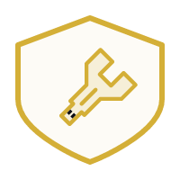
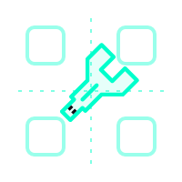
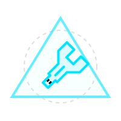

Executive Brand Strategy & Visual Identity Guidelines
Corporate Brand Identity Master Guide
The definitive framework governing canonical product names, system typography, layout logic, corporate voice, and the modular design architecture of SovereignOS.
In the age of fragmented, cloud-dependent, and transient AI utilities, NeuroSync SovereignOS asserts a fundamental paradigm shift: Local-first data sovereignty and absolute executive control. We reject the industry's trend toward opaque architectures, providing an invisible, deterministic orchestration hub that turns project thinking into an industrial-grade asset.
To empower beginner hobbyists and freelancers by delivering an accessible, unbreakable, local-first AI workflow platform governed entirely by Programmatic Determinism and zero-trust sandboxing, running seamlessly on consumer hardware.
To render opaque, cloud-dependent AI architectures obsolete, setting the global benchmark for verifiable confidence and user-sovereign automation.
The brand voice must sound like an Executive System: Authoritative, Precise, and Deterministic. We do not use speculative or exaggerated language that degrades operational trust.
Inflated, subjective language causes trust friction for users and hallucination risks for coding agents. Strictly avoid the following legacy terms.
When authoring documentation or coding prompts, strategic adjectives must map directly to strict technical properties to prevent scope creep.
| Brand Voice Claim | Engineering Implementation / Translation |
|---|---|
| "Sovereign Enclave" | Local directory sandbox with zero cloud egress capabilities. |
| "Fortress-Level Security" | SHA-256 hashed credentials, strict API allowlists, zero-eval runtime. |
| "Verifiable Confidence" | 1:1 trace links, independent static audits, explicit warning payload fields. |
| "Predictive Insight" | Draft-only, non-persisted JSON proposals requiring POST approval. |
The NeuroSync master mark is a precision-engineered hexagon and glowing cyan core. It symbolizes deterministic execution. Do not alter its geometry.
Clear Space: The minimum clear space around the master logo is defined by the width of the central cyan 'Wrench' element. No typography or graphical assets may intrude into this zone.
Minimum Size Constraints: To preserve the integrity of the cyan glow effect and the 45-degree angle path, the logo must never be rendered smaller than:
Under no circumstances should the geometry, color logic, or effects of the SVG be overridden.
Naming inconsistency causes cognitive friction for operators and execution errors in coding agents. Use this precise authority ledger for all product references.
| Asset Level | Canonical Brand Term | Forbidden / Deprecated | Engineering Definition |
|---|---|---|---|
| Master Product | NeuroSync SovereignOS | NeuroSync Sovereign OS, NeuralSync | The central local-first workflow cockpit platform. (Note: SovereignOS contains no space before OS). |
| Architecture | SovereignOS | Sovereign Suite, Microservice Mesh | The internal modular system ecosystem inside NeuroSync. |
| Legacy Baseline | ByteBuster Agent v1.0 Beta | ByteBuster Demon, Flat AI | The functional single-process code base foundation. |
| Memory Matrix | BaseVault / Cerebro | Chroma Engine, Cloud Vector | Persistent SQLite-backed localized project-scoped memory. |
| Foresight Sentinel | ScoutDaemon | ScoutDemon, TrendOps | Passive background observer and tool quarantine. |
| User Interface | PortGrid | Widget Panel, Dev Console | Human-in-the-loop validation & executive control deck. |
SovereignOS is decoupled into six dedicated functional pillars. Each has a designated visual token and strict system boundaries to protect execution flow.
Authorized DAG orchestrator, master task queue, and atomic BEGIN IMMEDIATE transaction lease controller.

SQLite control engine, memory snapshots, data sanitization loops, and local backup/restore pipelines.

Interactive operator control deck. Connects the user to validation logs and local verification badges.
Universal traffic director, provider manager, latency ELO routing engine, and Free Mode Governor.

Requirements reviews, asynchronous model consensus mechanisms, and draft-only proposal compilation.
Headless scraper, passive resource monitor, environment scanner, and quarantined asset stager.
The system’s claim of "Fortress Security" requires enforcing programmatic boundaries. ScopeLogic & ScoutDaemon are strictly prohibited from writing directly to production database tables or self-persisting configurations. They are draft-only mechanisms. Direct write/execution is exclusive to CoreExec upon explicit operator signature registered in PortGrid.
The visual language reflects premium tactical command: deep, structural backgrounds accentuated by vibrant status markers indicating zero-trust safety.
We employ a highly structured, triple-tier font classification system designed to distinguish between narrative direction and raw telemetry.
In digital screens, PortGrid must avoid flat solid blocks. The visual promise of "Executive Control" is achieved through glass layers placed over abstract grid lines.
Glass components feature backdrop-blur (12px), semi-transparent background alphas (0.75), and a crisp 1px white stroke at 0.08 opacity.
In local-first, zero-trust systems, the interface is not a decorative layer. How information is displayed directly impacts how safely the operator runs the machine.
Every AI generation output or run action must explicitly render one or more verified badges representing execution boundaries:
No external model provider or network calls were initiated during node execution.
PII, security tokens, and host configurations were scrubbed before external routing.
User has manually signed off on file modifications or privileged tool execution.
Output maintains a strict 1:1 trace integrity link to verified local files.
Validation checks detected structural anomalies; manual verification is required.
Free Mode Governor active; token budgets capped within project constraints.
Never show a precise confidence float without a programmatic formula validation. Instead, map the generated synthesis into clean qualitative brackets:
This document serves as the immutable source of truth for all NeuroSync SovereignOS identity execution. To prevent architectural naming drift, strict operational oversight is enforced.
ByteBuster Cognitive Nexus Engineering Team
nexus-ops@bytebuster-tools.online
| Version | Date | Author | Approver | Summary of Structural Changes |
|---|---|---|---|---|
| v1.0 Baseline | June 21, 2026 | Corporate Brand Strategy | ByteBuster Nexus | Initial deployment of the comprehensive Master Brand Guide. Established SovereignOS core, canonical naming, SVG logo constraints, and PortGrid UX rules. |
| v1.1 Update | June 21, 2026 | AI Documentation Agent | Billie | Strict enforcement of NeuroSync SovereignOS naming (no spaces, no ALL CAPS). Deprecation of legacy marketing phrasing. Integrated Master Identity PDF structure. |